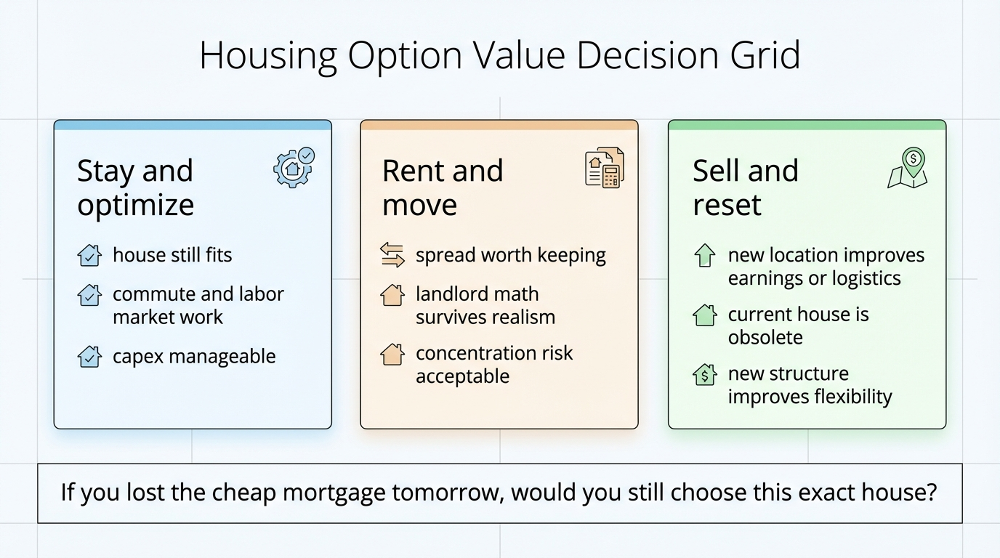

The Mortgage Lock-In Trap: Why a 3% Loan Can Still Make You Poorer in 2026
A low fixed mortgage rate feels like wealth because it lowers your monthly payment. In many households it also functions like a constraint, freezing labor mobility, family adaptation, and better balance-sheet choices.
As of March 26, 2026, Freddie Mac reported that the average 30-year fixed mortgage rate was 6.38%, up from 6.22% the prior week and down from 6.65% a year earlier. That leaves millions of existing owners sitting on a huge financing spread between the rate on their current house and the rate they would face if they moved. The spread is real economic value. It is also the reason many households have started treating one housing asset as if it solved every other housing problem. That is where the trap begins.

The Federal Reserve’s revised 2025 paper on mortgage lock-in estimated that the 2022 lock-in shock explained 44% of the drop in mortgage-borrower mobility from 2021 to 2022. The same work estimated that the shock reduced time on market by 29% and increased house prices by 8% under historically tight market conditions. Those are not abstract frictions. They are the mechanism by which a low-rate mortgage turns into a local scarcity machine. Existing owners hesitate to list, would-be buyers face tighter supply, and families end up optimizing around financing rather than around the full set of decisions that actually determine long-run wealth.
What Is Established
Lock-in is a real market force, not a media phrase
Mortgage lock-in means the fixed rate on an existing loan is materially better than the rate available on a replacement home. When that gap is wide, moving becomes expensive even if income is stable and equity is positive. The result is slower turnover. That is exactly what the Federal Reserve paper documented. In other words, the low-rate homeowner is not simply choosing to stay. The financing structure is actively changing the cost of every move.
Housing activity has improved from the floor, but supply is still not loose
The National Association of REALTORS reported that existing-home sales rose 1.7% in February 2026 to a seasonally adjusted annual rate of 4.09 million, with inventory at 1.29 million units, equal to 3.8 months of supply. That is better than outright freeze, but it is not a high-optionality market. At the same time, FHFA reported that national house prices rose 1.8% year over year in the fourth quarter of 2025. Price growth has slowed relative to the earlier post-pandemic surge, but owners still face a market in which replacement housing is expensive, financing is meaningfully costlier than their legacy loan, and inventory remains limited.
The value of the cheap loan is real, but it is not the same thing as durable wealth
A 3% mortgage can be one of the best assets on a household balance sheet. It lowers monthly carrying cost and protects against refinancing risk. But that benefit is narrow. It attaches to one property and one financing structure. If it traps a household in the wrong labor market, the wrong school catchment, the wrong commute geometry, or the wrong house size for current family structure, the mortgage subsidy can coexist with poorer overall outcomes. This is the same distinction WealthMeter has already made in paper net worth versus liquidity-adjusted resilience. A financing advantage can be valuable and still leave the household under-optimized.
Why Owners Misread The Situation
They price the monthly payment, not the option value they are giving up
Most homeowners compare the old payment to the hypothetical new payment and stop there. That is incomplete math. The real comparison includes commute time, career progression, child-care logistics, maintenance burden, insurance costs, property tax regime, aging-in-place suitability, and the possibility that a better geographic fit raises savings rate or earning power. A household can “save” on a mortgage and still lose on the life system attached to it.
They treat home equity as flexible capital even when it is trapped
Home equity looks like wealth in dashboards and lender portals. In a locked-in market, much of that wealth is not liquid without sacrificing the cheap debt that made the position comfortable in the first place. That means families often overstate their real optionality. They are richer on paper than they are in decision space. If the only way to unlock equity is to replace a 3% loan with a 6% loan, the equity is partly encumbered by the financing regime.
They ignore the cost of living in the wrong house
A house that no longer fits your work pattern or family needs is not neutral. It can force higher transport costs, add child-care complexity, increase repair spend, or delay career moves. These are not side issues. They are recurring cash-flow drains and opportunity costs. A low-rate mortgage can reduce one line item while increasing several others.
Core distinction: A low mortgage rate is a financing asset. Wealth is the household’s ability to preserve flexibility, absorb shocks, and redeploy capital when conditions change.
Operational error: When families defend the mortgage at all costs, they often end up managing around the loan instead of managing toward the strongest total-life outcome.
What Is Inference, Not Yet A Universal Rule
It is reasonable to infer that lock-in is still suppressing turnover in 2026 and still distorting household decisions. It is not reasonable to infer that every owner should sell, refinance into something worse, or become a landlord. The correct response depends on the gap between three values: the financing subsidy you are preserving, the life and labor benefits of moving, and the asset-quality burden of the current property.
For some households, staying put remains correct. If the current house matches family structure, the commute is efficient, maintenance is controlled, and savings rate is strong, the low-rate loan is a genuine compounding edge. For others, the “edge” is a decoy. It hides the fact that the house is too large, too far away, too expensive to maintain, or anchored to a labor market that no longer fits future income potential. In those cases the loan preserves comfort while degrading wealth.
The WealthMeter Decision Framework
1) Estimate the annual mortgage subsidy you would lose
Start with the payment delta between your current loan and the replacement loan on a realistic next-house scenario. That is the visible part of lock-in. It is important, but it is only step one.
2) Price the non-mortgage drag of staying
Add commuting costs, time cost, insurance, taxes, recurring capex, and any career or family constraints the current location imposes. If you cannot price these with rough numbers, you are not comparing the options seriously enough.
3) Decide whether your equity is strategic or decorative
If your balance sheet depends on home equity you cannot access without damaging the financing structure, then a portion of that equity is decorative wealth. It may still matter. It should not be treated as the same thing as liquid capital or low-friction borrowing capacity.
4) Separate house quality from loan quality
A great loan attached to an obsolete house is still a mismatched position. A mediocre loan attached to a house that materially improves earnings, logistics, or long-run family stability can still be the better wealth decision. Financing matters. Fit matters too.

Three Responses That Beat Passive Drift
Stay, but treat the house like an operating asset
If you keep the property, stress-test taxes, insurance, capex, and family fit over five years. A low rate can justify staying. It does not justify neglecting the asset-quality side of the ledger.
Rent the old house and move only if the numbers survive realism
This is attractive in theory because it preserves the cheap debt. It fails quickly if maintenance burden, vacancy risk, property management cost, or concentrated housing exposure are ignored. Becoming a landlord is not a free optionality trade.
Sell and reset when the life improvement dominates the subsidy loss
Some households should simply move. If the new location improves earnings capacity, reduces structural cost, or meaningfully improves family logistics, the higher financing cost can still be rational. That is the same logic behind city-driven wealth divergence and fixed-cost inflation. The wrong physical setup compounds just as surely as the wrong investment setup.
What Matters Now
Mortgage lock-in is one of the clearest examples of why household wealth cannot be evaluated from net worth alone. The family with the perfect legacy mortgage may be less economically adaptive than the family with a worse rate but better geographic, career, and lifestyle fit. Wealth is not a trophy for having won the 2021 refinancing lottery. Wealth is the ability to keep making strong decisions after conditions change.
The households that come out ahead in this phase will not be the ones who merely cling to the cheapest debt. They will be the ones who price that debt accurately, price the cost of staying accurately, and choose the housing structure with the highest total option value. Sometimes that means staying. Sometimes it means moving despite the pain. The mistake is letting the mortgage rate make the decision by itself.
Source List
Freddie Mac. (2026, March 26). Primary Mortgage Market Survey.
Aladangady, A., Krimmel, J., & Scharlemann, T. (2025, revised). Locked In: Mobility, Market Tightness, and House Prices. Federal Reserve Board, FEDS 2024-088r1.
National Association of REALTORS. (2026, March 10). Existing-home sales report shows 1.7% increase in February.
FHFA. (2026, February 24). U.S. house prices rise 1.8 percent year over year; up 0.8 percent quarter over quarter.